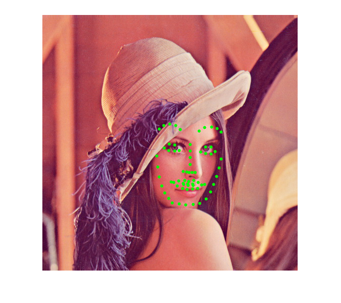

Facemark AAM training demo
The user should provides the list of training images accompanied by their corresponding landmarks location in separate files.
See below for a description of file formats.
Examples of datasets are available at https://ibug.doc.ic.ac.uk/resources/facial-point-annotations/.
Sources:
Contents
Preparation
Before you continue with this tutorial, you should download a training dataset of facial landmarks detection.
We suggest you to download the LFPW dataset which can be retrieved at https://ibug.doc.ic.ac.uk/download/annotations/lfpw.zip.
First thing to do is to make two text files containing the list of image files and annotation files respectively. Make sure that the order of images and annotations in both files are matched. Furthermore, it is advised to use absolute paths instead of relative paths.
Example to make the file list in Linux machine:
ls /data/lfpw/trainset/*.png > images_train.txt ls /data/lfpw/trainset/*.pts > annotations_train.txt
Optionally, you can also create similar files list for the testset.
Example of content in the images_train.txt file:
/data/lfpw/trainset/image_0001.png /data/lfpw/trainset/image_0002.png /data/lfpw/trainset/image_0003.png ...
Example of content in the annotations_train.txt file:
/data/lfpw/trainset/image_0001.pts /data/lfpw/trainset/image_0002.pts /data/lfpw/trainset/image_0003.pts ...
where a .pts file contains the position of each face landmark. Make sure that the annotation format is supported by the API, where the contents should look like the following snippet:
version: 1
n_points: 68
{
212.716603 499.771793
230.232816 566.290071
...
}Once trained, we show how to use the model to detect face landmarks in a test image.
In this tutorial, the pre-trained model will not be provided due to its large file size (~500MB). By following this tutorial, you will be able to train and obtain your own trained model within few minutes.
Options
% [INPUT] path of a text file contains the list of paths to all training images imgList = fullfile(mexopencv.root(),'test','facemark','lfpw','images.lst'); assert(exist(imgList, 'file') == 2, 'missing images list file'); % [INPUT] path of a text file contains the list of paths to all annotations files ptsList = fullfile(mexopencv.root(),'test','facemark','lfpw','annotations.lst'); assert(exist(ptsList, 'file') == 2, 'missing annotations list file'); % [OUTPUT] path for saving the trained model modelFile = fullfile(tempdir(), 'model_aam.yaml'); % [INPUT] path to the cascade xml file for the face detector xmlFace = fullfile(mexopencv.root(),'test','haarcascade_frontalface_alt.xml'); download_classifier_xml(xmlFace); % [INPUT] path to the cascade xml file for the eyes detector xmlEyes = fullfile(mexopencv.root(),'test','haarcascade_eye_tree_eyeglasses.xml'); download_classifier_xml(xmlEyes); % path to test image testImg = fullfile(mexopencv.root(),'test','lena.jpg');
Init
create the facemark instance
scales = [2.0, 4.0]; obj = cv.Facemark('AAM', 'Scales',scales, ... 'ModelFilename',modelFile, 'SaveModel',true, 'Verbose',true);
In this case, we modified the default list of the scaling factor. By default, the scaling factor used is 1.0 (no scaling). Here we add two more scaling factor which will make the instance trains two more model at scale 2 and 4 (2 times smaller and 4 times smaller, with faster fitting time). However, you should make sure that this scaling factor is not too big since it will make the image scaled into a very small one. Thus it will lose all of its important information for the landmark detection purpose.
Data
load the dataset, and add training samples one-by-one
disp('Loading data...') [imgFiles, ptsFiles] = cv.Facemark.loadDatasetList(imgList, ptsList); for i=1:numel(imgFiles) % load image and its corresponding annotation data, then add pair img = cv.imread(imgFiles{i}); pts = cv.Facemark.loadFacePoints(ptsFiles{i}); obj.addTrainingSample(img, pts); end
Loading data...
Train
train the algorithm, model will be saved to specified file
disp('Training...')
tic
obj.training();
tocTraining... Elapsed time is 6.612023 seconds.
Prepare for Test
Since the AAM algorithm needs initialization parameters (rotation, translation, and scaling), we need to declare the required variable to store these information which will be obtained using a custom function. The implementation of getInitialFitting function in this example is not optimal, you can always create your own function.
The initialization is obtained by comparing the base shape of the trained model with the current face image. In this case, the rotation is obtained by comparing the angle of line formed by two eyes in the input face image with the same line in the base shape. Meanwhile, the scaling is obtained by comparing the length of line between eyes in the input image compared to the base shape.
The fitting process starts by detecting faces in given image.
If at least one face is found, then the next step is computing the initialization parameters. In this case, since getInitialFitting function is not optimal, it may not find pair of eyes from a given face. Therefore, we will filter out faces without initialization parameters and in this case, each element in the confs vector represent the initialization parameters for each filtered face.
create cascade detector objects (for face and eyes)
ccFace = cv.CascadeClassifier(xmlFace); ccEyes = cv.CascadeClassifier(xmlEyes);
detect faces
img = cv.imread(testImg); faces = myFaceDetector(img, ccFace); assert(~isempty(faces), 'no faces found'); fprintf('%d faces\n', numel(faces));
1 faces
get base shape from trained model
s0 = obj.getData();
s0 = cat(1, s0{:});compute initialization params for each detected face
S = struct('R',eye(2), 't',[0 0], 'scale',1); confs = S([]); faces_eyes = {}; for i=1:numel(faces) [conf, found] = getInitialFitting(img, faces{i}, s0, ccEyes); if found confs(end+1) = conf; faces_eyes{end+1} = faces{i}; end end assert(~isempty(confs), 'failed to compute initialization params'); fprintf('%d faces with eyes\n', numel(confs));
1 faces with eyes
For the fitting parameters stored in the confs vector, scaleIdx field represents the ID of scaling factor that will be used in the fitting process. In this example the fitting will use the biggest scaling factor (4) which is expected to have the fastest computation time compared to the other scales. If the ID is bigger than the available trained scales in the model, the model with the biggest scale ID is used.
confs.scaleIdx = numel(scales) - 1;
Test
The fitting process is quite simple, you just need to pass the image, array of rectangles representing the ROIs of all faces in the given image, and the configuration params. It returns the landmark points.
tic
landmarks = obj.fit(img, faces_eyes, 'Configs',confs);
tocElapsed time is 0.481008 seconds.
After the fitting process is finished, we can visualize the result
for i=1:numel(landmarks) img = cv.Facemark.drawFacemarks(img, landmarks{i}, 'Color',[0 255 0]); end imshow(img)
Helper functions
function download_classifier_xml(fname) if exist(fname, 'file') ~= 2 % attempt to download trained Haar/LBP/HOG classifier from Github url = 'https://cdn.rawgit.com/opencv/opencv/3.4.0/data/'; [~, f, ext] = fileparts(fname); if strncmpi(f, 'haarcascade_', length('haarcascade_')) url = [url, 'haarcascades/']; elseif strncmpi(f, 'lbpcascade_', length('lbpcascade_')) url = [url, 'lbpcascades/']; elseif strncmpi(f, 'hogcascade_', length('hogcascade_')) url = [url, 'hogcascades/']; else error('File not found'); end urlwrite([url f ext], fname); end end function faces = myFaceDetector(img, ccFace) %MYFACEDETECTOR Detect faces % % faces = myFaceDetector(img, ccFace) % % ## Input % * __img__ input image % * __ccFace__ cascade object for face detection % % ## Output % * __faces__ detected faces, `{[x,y,w,h], ...}` % % See also: cv.Facemark.getFacesHAAR % if size(img,3) > 1 gray = cv.cvtColor(img, 'RGB2GRAY'); else gray = img; end gray = cv.equalizeHist(gray); faces = ccFace.detect(gray, 'ScaleFactor',1.4, 'MinNeighbors',2, ... 'ScaleImage',true, 'MinSize',[30 30]); end function [conf, found] = getInitialFitting(img, face, s0, ccEyes) %GETINITIALFITTING Calculate AAM intial fit params % % [conf, found] = getInitialFitting(img, face, s0, ccEyes) % % ## Input % * __img__ input image % * __face__ detected face `[x,y,w,h]` % * __s0__ base shape of the trained model % * __ccEyes__ cascade object for eyes detection % % ## Output % * __conf__ struct with rotation, translation, and scale % * __found__ success flag % found = false; conf = struct('R',eye(2), 't',[0 0], 'scale',1.0); % detect eyes in face if cv.Rect.area(face) == 0, return; end faceROI = cv.Rect.crop(img, face); eyes = ccEyes.detect(faceROI, 'ScaleFactor',1.1, 'MinNeighbors',2, ... 'ScaleImage',true, 'MinSize',[20 20]); if numel(eyes) ~= 2, return; end % make sure that first is left eye, second is right eye if eyes{2}(1) < eyes{1}(1) eyes = eyes([2 1]); end % eyes centers in detected face c1 = face(1:2) + eyes{1}(1:2) + eyes{1}(3:4)/2; % left eye c2 = face(1:2) + eyes{2}(1:2) + eyes{2}(3:4)/2; % right eye assert(c1(1) < c2(1), 'eyes not ordered correctly (left then right)'); % eyes centers in base shape (shifted to middle of image) base = bsxfun(@plus, s0, [size(img,2) size(img,1)]/2); c1Base = (base(37,:) + base(40,:)) / 2; % left eye c2Base = (base(43,:) + base(46,:)) / 2; % right eye % scale between the two line length in detected and base shape scale = norm(c2 - c1) / norm(c2Base - c1Base); % eyes centers in scaled base shape (not shifted) base = s0 * scale; c1Base = (base(37,:) + base(40,:)) / 2; c2Base = (base(43,:) + base(46,:)) / 2; % angle of horizontal line connecting eyes centers in scaled base shape aBase = atan2(c2Base(2) - c1Base(2), c2Base(1) - c1Base(1)); % angle of horizontal line connecting eyes centers in detect face a = atan2(c2(2) - c1(2), c2(1) - c1(1)); % rotation matrix from the two angles R = cv.getRotationMatrix2D([0 0], rad2deg(aBase-a), 1.0); R = R(1:2,1:2); % eyes centers in transformed base shape (scaled then rotated) base = (R * scale * s0')'; c1Base = (base(37,:) + base(40,:)) / 2; c2Base = (base(43,:) + base(46,:)) / 2; % translation between detected and transformed base shape t = c1 - c1Base; % fill output found = true; conf.R = R; conf.t = t; conf.scale = scale; end